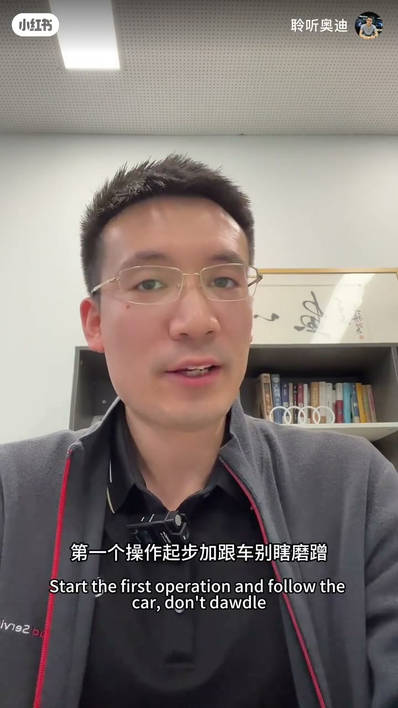
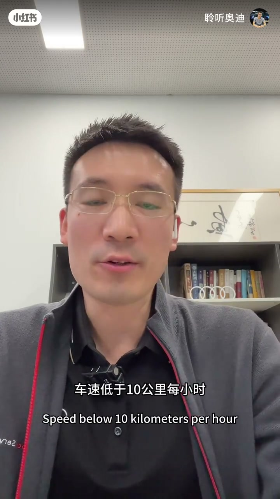
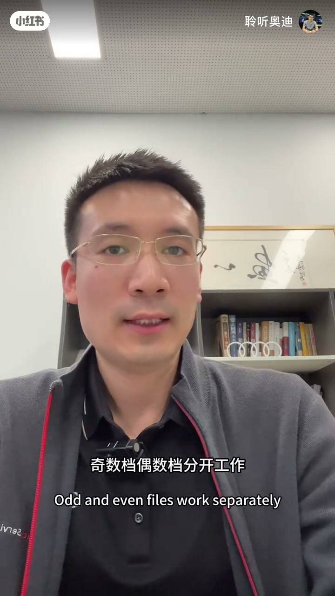
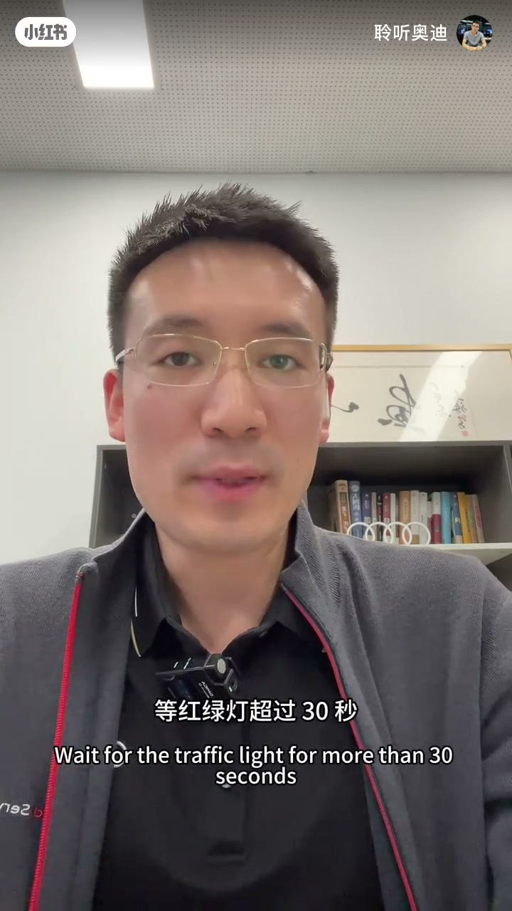
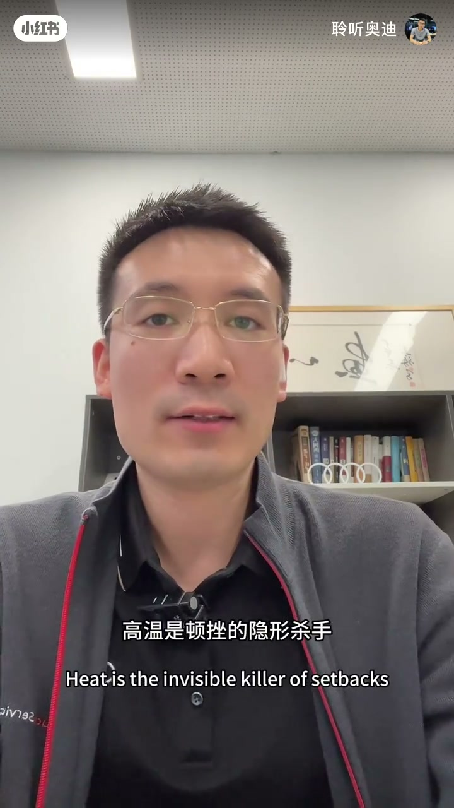

内容要点
「聆听奥迪」面向奥迪双离合车主：低速顿挫多半不是质量差，而是没摸透脾气。给出起步跟车、换挡信号、避开半联动三套操作，并补变速箱油保养点。
知识结构
怠速预热；轻油至约 1500rpm；<10km/h 锁 2 档或自动驻车。
深踩超车、提前松油降档；巡航稳住 6–7 档。
红灯>30 秒挂 N；坡道用自动驻车，别半油半刹。
激烈驾驶后怠速降温；约 6 万公里换原厂变速箱油。
双离合要「明确信号、少磨半联动」：冷车预热、低速别刹爬、红灯挂 N、坡道用自动驻车——操作对了，顿挫会像换了一台箱。
00:00-00:51起步与跟车：别瞎磨蹭
双离合换挡快、动力直接，但低速顿挫吐槽多。作者判断 90% 是没摸透脾气。第一招：冷车启动先怠速约 30 秒预热；起步轻踩油门转速约 1500rpm，车速过 20km/h 再正常给油，1→2 档顿挫可明显减轻。
市区拥堵最关键：车速低于 10km/h，要么切手动锁二档，要么用自动驻车，千万别踩着刹车慢慢蠕行——半联动越久越顿挫，还磨离合器片。


00:51-01:48果断信号与躲开半联动
奇数/偶数档分两套离合工作，需要明确驾驶信号：超车深踩油门让箱连降两到三档；减速提前松油让其自然降档，别频繁点刹导致档位来回切。高速尽量匀速，稳住 6–7 档少无效换挡。
第三招：红灯超过约 30 秒挂 N 并拉手刹，别一直 D 踩刹。坡道起步开自动驻车，踩稳刹激活后停顿约两秒再给油；别用半踩油门加刹车找平衡。


01:48-02:12降温与原厂箱油
激烈驾驶或连续爬坡后，停车前怠速约一分钟让变速箱油温下来——高温是顿挫隐形杀手。保养重点：变速箱油约每 6 万公里换原厂，油质变差油压不稳，再好操作也没用。

完整转录（51段）
以下文本由 Whisper medium 模型自动转录，可能存在少量识别误差，已尽可能修正。
哈喽 各位奥迪车主
在奥迪的双离合变速箱换挡快
动力直接
可不少朋友都吐槽低速顿挫
其实这不是变速箱的质量问题
90%都是没摸透它的脾气
今天学会的三个操作
让你的爱车像换了一个变速箱一样平顺
第一个操作 起步加跟车 别瞎磨蹭
冷车启动先带速30秒钟
让变速箱预热到位
起步时轻踩油门转速在1500RMB左右
等车速超过20公里之后再正常给油
一到二档切换的顿挫感直接减半
市区拥堵跟车最关键
车速低于10公里每小时
要么切手动模式 锁二档 要么自动驻车
千万别踩着刹车 慢慢如行
双离合半联动状态越久
不仅顿挫 还磨离合鸡片 越开越抖
第二个操作 换档衔接要果断
奥迪双离合是双离合设计
基数档 偶数档分开工作
你得给它明确的驾驶信号
想超车就深踩油门别犹豫
变速箱会快速降两到三个档提动力
丝滑不拖沓 减速时提前冲油门
让变速箱自然降档 别平反点杀
不然档位来回切换 顿挫感直接拉满
高速巡航尽量匀速 让变速箱稳住6到7档
减少没必要的换档
第三个操作 避开半联动陷阱
等红绿灯超过30秒
一定要挂N档拉手刹
别一直D档踩刹车
离合器长期半联动 顿挫会越来越严重
坡道起步要记住 开自动驻车
踩稳刹车激活后停顿两秒再踩油门
既不溜车也不顿挫
千万别用半踩油门加刹车找平衡
纯属上车操作
另外 激烈驾驶或连续爬坡后
停车前怠速一分钟 让变速箱油温降下来
高温是顿挫的隐形杀手
最后 化重点
边箱油每6万公里必须换原厂的
油质变差会导致油压不稳
再好的操作也没用
以上这三个操作都是实战总结的干货
造作不仅能消除顿挫
还能延长速便